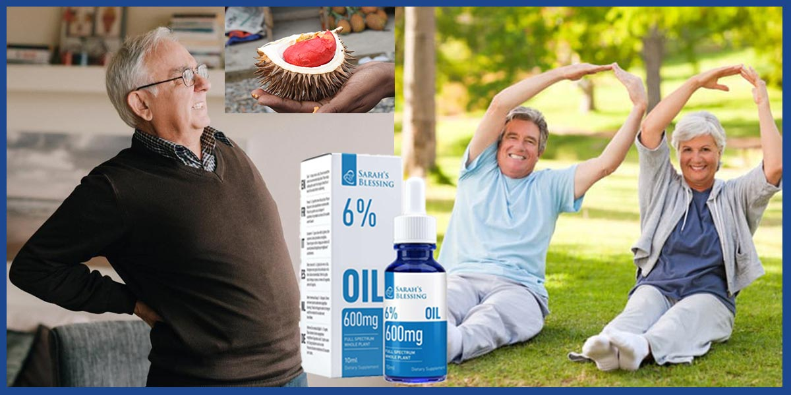
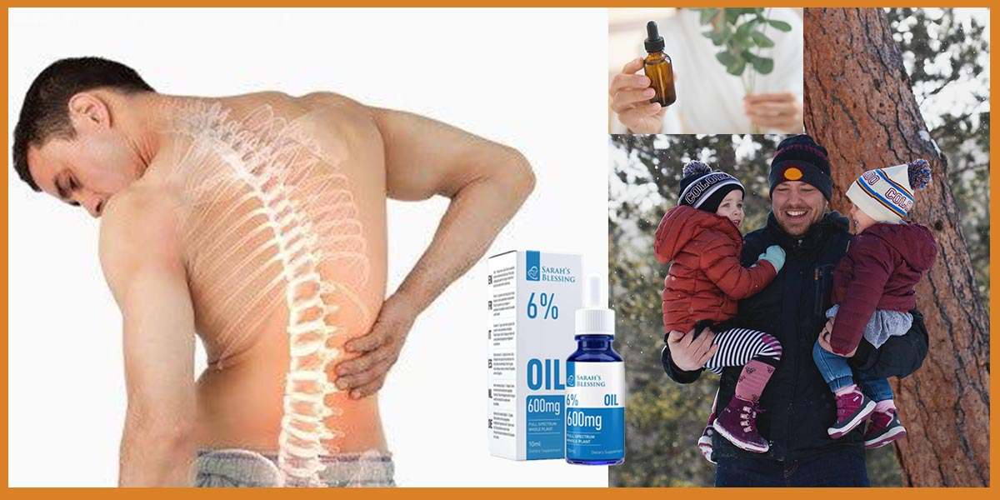

If it's not too much trouble make certain to discuss your individual signs and side effects just as the forewarned medications together with your wellness care master to decide the exact indicative and cure plan to your circumstances.
For the overall population, even those with nerve root health-issue, their indications will improve inside months regardless of what treatment is utilized, regardless of whether no treatment is given. Specialists ordinarily check with returned torment as intense if it's been present for significantly less than a month and consistent on the off chance that it goes on for an all-inclusive timeframe.
What Are The Causes Behind Severe Back Pain?
Back torment is a manifestation. Normal reasons of lower spinal pain contain ailment or harm to the muscle gatherings, bones, as well as nerves of the spine. Torment jumping up from variations from the norm of organs inside the stomach, pelvis, or chest will likewise be felt inside the lower back. This is known as alluded throb. Numerous disarranges inside the stomach, alongside a ruptured appendix, aneurysms, kidney maladies, kidney sullying, bladder health issues, pelvic contaminations, and ovarian issues, among others, can reason torment expressed the returned. Typical pregnancy can reason again torment from multiple points of view, alongside extending tendons inside the pelvis, awful nerves, and stressing the low lower back. Your primary care physician can have this at the top of the priority list while assessing your throb.
Nerve root disorders are individuals who produce signs and manifestations of nerve impingement (a nerve is straightforwardly irate), frequently because of a herniation (or swelling) of the plate between the lower again bones. Sciatica is an occasion of nerve root impingement. Impingement torment tends to be sharp, influencing a chose area, and related with deadness inside the zone of the leg that the influenced nerve supplies.
Das bequeme Band ist aus Silikon gefertigt und fühlt sich beim Tragen gut an, was es perfekt für Sport und Freizeit macht.
Herniated circles widen in light of the fact that the spinal plates decline or create more slender. The jellylike basic piece of the circle swells out of the huge sadness and pushes towards a nerve root. Intervertebral plates start to decline through the 1/multi decade of presence. Herniated plates are situated in a solitary 0.33 of grown-ups more seasoned than 20 years old. Just 3% of those, in any condition, produce indications of nerve impingement.
Spondylosis occurs as intervertebral plates lose dampness and degree with age, which diminishes the circle top. Indeed, even minor wreck under these circumstances can reason aggravation and nerve root impingement, which can create exemplary sciatica without plate crack.
Spinal circle degeneration combined with affliction in joints of the low back can cause spinal-trench narrowing. These adjustments in the circle and the joints produce signs and indications and can be noticeable on a X-Ray. A man or lady with spinal stenosis may likewise have torment emanating down both reduction furthest points while the status for a long haul or going for walks even short separations.
Cauda equina disorder is a logical crisis wherein the spinal line is on the double compacted. Plate material ventures into the spinal trench, which packs the nerves. A character may met throb, suitable absence of sensation, and inside or bladder issue. This could incorporate inadequacy to control pee making incontinence or the insufficiency start pee. Musculoskeletal hurt disorders that produce low again throb include myofascial hurt disorders and fibromyalgia.
Myofascial torment is described by means of torment and delicacy over limited regions (cause factors), absence of assortment of development inside the stressed muscle organizations, and throb emanating in a capacity appropriation anyway compelled to a fringe nerve. The help of hurt is much of the time said when the concerned muscle bunch is extended.
Fibromyalgia results in broad throb and delicacy all through the edge. Summed up solidness, weariness, and muscle throbs are articulated. Contaminations of the bones (osteomyelitis) of the spine are an unordinary reason of low spinal pain.
Noninfectious contamination of the spine (spondylitis) can cause firmness and throb inside the spine this is exceptionally more unwelcome inside the morning. Ankylosing spondylitis ordinarily starts in young people and adolescents. Tumors, likely un-safe, can be a wellspring of skeletal hurt.
Irritation of nerves from the spine can emerge with contamination of the nerves with the herpes zoster infection that reasons shingles. This can emerge inside the thoracic district to reason upper back agony or in the lumbar region to intention low lower spinal pain.
As can be seen from the critical, anyway not comprehensive, posting of potential reasons of low again hurt, it's far imperative to have an intensive therapeutic assessment to manual feasible symptomatic tests.

Lower Back Pain Signs And Symptoms That You Should Never Ignore
The torment may likewise emanate down the front, side, or lower back of your leg, or it might be restricted to the low lower back.
You may have deadness or frail point in the piece of the leg that gets its nerve supply from a packed nerve.
The throb may likewise end up being more awful with the hobby.
At times, the agony can be more terrible around evening time or with delayed sitting which remembers for an extended vehicle ride.
Torment in the lumbosacral area (bring down a piece of the back) is the main side effect of low returned torment.
Another example will be the ineptitude to raise your huge toe upward. This results when the fifth lumbar nerve is undermined.
This can make powerlessness plantarflex the foot. This methodology would be not able to remain on your feet or convey your foot descending. This happens while the essential sacral nerve is packed or harmed.
What Is The Right Time To Seek Back Pain Medical Care
The Health Agency has perceived 11 blood-red banners that medicinal specialists scan for while assessing somebody with lower back agony. The acknowledgment of these blood-red banners is to find cracks (broken bones), contaminations, or tumors of the spine. The nearness of any of the accompanying ruby banners related to low again hurt should set off a visit on your wellbeing expert as fast as doable for the entire assessment.
In the event that you can't control the hurt utilizing the medications, you're by and by endorsed, this will be a sign for reconsideration or to go to a crisis branch if your primary care physician isn't constantly accessible. By and large, this issue is top-notch tended to with the wellbeing expert composing the remedy who is directing your consideration.
The nearness of any of the above would legitimize a go to a restorative establishment's crisis division, specifically in the event that your hover of family members specialist can't assess you in the following 24 hours.
The nearness of any intense nerve brokenness needs to also set off an immediate visit. These might incorporate the lack of ability to walk or inadequacy to raise or diminish your foot on the lower leg. Likewise secured will be the failure to raise the tremendous toe upward or walk on your impact points or represent your feet. These may infer intense nerve harm or pressure. Under sure conditions, this could be an intense neurosurgical crisis.
Any individual more seasoned than 70 years old: There is a duplicated rate of malignant growth, health-Issues, and stomach reasons for the throb.
Earlier records of most malignant growths and history of an ongoing health-Issue. Temperature over a hundred F.
Low returned torment more awful very still: This is believed to be related with an irresistible or harmful reason for throb however can likewise happen with ankylosing spondylitis and unexplained weight decrease
New enormous wreck comprising of a tumble from a top, engine vehicle occurrence, or comparative episode. New slight wreck during the ones more seasoned than 50 years old: A collapse a few stages or slipping and arriving at the rear end can be contemplated slight wreck.
History of expanded steroid use: People with bronchial asthma, COPD, and rheumatic issues, for instance, might be given this kind of medication. Anybody with a record of osteoporosis: A matured female with a record of a hip crack, for instance, would be viewed as a high possibility.
Loss of inside or bladder control, together with issue starting or halting a course of pee or incontinence, can be an indication of an intense crisis and requires earnest appraisal in a crisis branch.
Lower Back Pain Test and Medications:
Body test
To make certain an extreme test, you might be approached to put on an outfit. The specialist will look forward to indications of nerve hurt while you walk for your impact points, ft, and bottoms of the feet. Reflexes have normally inspected the utilization of a reflex sled. This is executed at the knee and behind the lower leg. As you lie level to your once more, each leg, in turn, is expanded, each with and without the help of the wellbeing specialist. This is done to test the nerves, muscle power, and decide the nearness of pressure at the sciatic nerve. The sensation has normally tried the utilization of a pin, paper cut, broken tongue sadness, or distinctive sharp thing to survey any absence of sensation in your legs.
Imaging
Specialists can utilize various appraisals to "appearance inner you" to get an idea of what is presumably causing the spinal pain. No single check is perfect in that it recognizes the nonattendance or nearness of affliction a hundred% of the time.
In the event that there are no warnings, there is oftentimes little to be picked up in getting X-beams for patients with intense lower back agony. Since about ninety% of individuals include progressed inside 30 days of the beginning of their returned torment, most restorative specialists won't organization tests in the constant evaluation of intense, basic lower spinal pain.
Plain X-beams are commonly not mulled over useful inside the assessment of intense again torment, specifically inside the initial 30 days. Without pink banners, their utilization is disheartened. Their utilization is shown if there is tremendous wreck, gentle wreck during the ones more seasoned than 50 years old, individuals with osteoporosis, and individuals with delayed steroid use. Try not to expect an X-Ray to be taken.
A myelogram is an X-bRay take a gander at wherein a radio-dark color is infused immediately into the spinal channel. Its utilization has diminished significantly considering MRI filtering. A myelogram presently's generally finished along the edge of a CT test and, and still, after all that, best in unique conditions when surgery is being intentional.
X-ray filters are astoundingly focused on the check and are extremely expensive. The check doesn't utilize X-beams anyway extremely solid magnets to deliver photos. Their repetitive use is disheartened in intense returned torment aside from a condition that is available which could require moment medical procedure, comprehensive of with cauda equina disorder or when pink banners are a blessing and recommend tainting of the spinal waterway, bone pollution, tumor, or crack.
An X-ray can likewise be considered following one month of signs to preclude increasingly extreme hidden issues.
X-rays are not without difficulties. Swelling of the circles is alluded to on up to forty% of MRIs completed on individuals without again torment. Other research has shown that MRIs neglect to analyze up to 20% of cracked plates which can be found for the term of medical procedure.
A CT examination is a Ray watch that can deliver a move-sectional photograph of the body. CT analysis is utilized simply like MRI.
Medicinal history
Since numerous select conditions may likewise intention lower back torment, radical clinical records could be completed as a piece of the test. A portion of the inquiries you're mentioned won't seem relevant to you yet are exceptionally basic for your wellbeing specialist in deciding the stockpile of your hurt.
Your primary care physician will initially ask you numerous inquiries concerning the beginning of the torment. (Is it accurate to say that you were lifting a substantial thing and felt a quick agony? Did the agony please bit by bit?) He or she will have the option to need to perceive what exacerbates the torment higher or. The specialist will ask you inquiries alluding to the warning signs and side effects. The individual in question will have the option to inquire as to whether you have had the torment sooner than. Your wellbeing specialist will get some information about recent afflictions and related indications that incorporate hacks, fevers, urinary issues, or gut health issues. In young women, the specialist will need to perceive roughly vaginal dying, squeezing, or release. Agony from the pelvis, in these matters, is frequently felt inside the once more.
Contingent upon what the specialist not-known person isn't right with you, the restorative specialist may do a stomach assessment, a pelvic assessment, or a rectal test. These checks search for illnesses that could reason throb referenced your lower back. The most reduced nerves on your spinal twine serve the tactile area and bulk of the rectum, and damage to those nerves can bring about inadequacy to oversee pee and poop. Subsequently, a rectal test is indispensable to guarantee which you do now not have nerve harm on this region of your body.
Nerve evaluations
Electromyogram or EMG is a test that includes the situation of little needles into the bulk. Electrical leisure activity is observed. Its utilization is commonly saved for increasingly diligent yearn and to expect the degree of nerve root harm. The check is in like manner fit for help the wellbeing expert recognize nerve root disorder and muscle affliction.
Self-Care at Home for Back Pain
General suggestions are to reestablish typically, or near ordinary, leisure activity as fast as suitable. In any event, extending or games that area extra strain on the again is debilitated. Laying down with a cushion among the knees even as deception on one side may likewise expand comfort. A few specialists prescribe deception for you again with a cushion beneath your knees.
No particular back donning exercises had been found that ventured forward hurt or duplicated helpful limit in individuals with intense spinal pain. Exercise, in any event, might be valuable for individuals with interminable back torment to help them return to customary exercises and artistic creations. These games ordinarily contain extending moves.
Blood tests
Sedimentation rate or C-receptive protein are blood watches that could propose whether the disturbance is available on the edge. CBC is utilized to find heights of white platelets and paleness.
Low Back Pain Treatment
Prescription treatment choices depend on the correct anticipation of the low again torment. Your therapeutic specialist will figure out which medicine, assuming any, is high-caliber for you principally based on your restorative history, unfavorably susceptible responses, and different prescriptions you'll be taking.
Nonsteroidal mitigating restorative medications (NSAIDs) are the pillar of therapeutic solution for the alleviation of again torment. Ibuprofen, naproxen, ketoprofen, and numerous others are to be had. No particular NSAID has been demonstrated to be more prominent successful for the oversee of throb than some other. Notwithstanding, your wellbeing professional may also move you from one NSAID to some other to find one that works top-notch for you.
COX-2 inhibitors, together with celecoxib (Celebrex), are more prominent particular individuals from NSAIDs. Albeit duplicated worth can be a terrible component, the predominance of extravagant and possibly lethal seeping inside the gastrointestinal tract is, in reality, less with COX-2 inhibitors than with customary NSAIDs. Long-lasting period security (possible duplicated risk for heart attack or stroke) is as of now being assessed for COX-2 inhibitors and NSAIDs.
Acetaminophen has contemplated powerful regarding intense throb as appropriately. NSAIDs do have some of the limit feature results, which incorporate gastric aggravation and kidney hurt, with long haul use.
Muscle relaxants: Muscle fit isn't generally acknowledged as a thought process of returned torment, and the greatest relaxants have no effect on muscle fit. Muscle relaxants can be extra successful than a false treatment (sugar pill) in treating again throb, anyway, none has been demonstrated to be progressed to NSAIDs. No additional bit of leeway is won with the guide of the utilization of muscle relaxants in total with NSAIDs over the utilization of NSAIDs alone. Muscle relaxants reason sluggishness in as much as 30% of people taking them. Their utilization isn't in every cover mechanically upheld.
Narcotic analgesics: These pills are mulled over a possibility for throb control in intense back agony. The utilization of these prescriptions is identified with furious aspect outcomes, alongside reliance, sedation, diminished reaction time, sickness, and obfuscated judgment. One of the most extreme troublesome symptoms is obstruction. This happens at a major level of people taking this type of solution for various days. A couple of research directs their speedy timeframe use for transient torment cure. Their utilization, at the same time, doesn't speed recovery.
Steroids: Oral steroids can be of advantage in treating intense sciatica. Steroid infusions into the epidural zone have not been seen to diminish the time of signs or upgrade trademark and aren't at present support for the cure of intense returned torment without sciatica. The advantage of nonstop hurt with sciatica remains questionable. Infusions into the back joint territories, the perspectives, can be valuable for people with torment identified with sciatica. Trigger point infusions have not been shown advantageous in intense spinal pain. Trigger factor infusions with a steroid and a close-by sedative might be helpful in constant returned torment. Their utilization stays far from being obviously true.
Low Back Pain Surgery: Know Everything
The medical procedure is only sometimes considered for intense lower spinal pain until sciatica or the cauda equina disorder is available. The medical procedure is viewed as helpful for individuals with positive current nerve issues due to herniated circles.
Snorlax Shiatsu Neck and Shoulder Massager – Back Massager with Heat, Deep Kneading Electric rubdown pad for Neck, Back, Shoulder, Foot Body Pain Relief with the guide of Snorlax.Easy in using through earnest the Button on Control Panel. 15 minutes clock setting for secure use.
The heating and non-obligatory warmth work include gentle warm temperature that relieves hurting bulk and at the same time upgrades blood development.
The 3D massage has eight profound working back rub pivoting hubs slacken up aggravating body muscle torment. 3D revolution working rubdown rollers in U-Shaped Ergonomic design pad impeccable to use on neck, once more, shoulder, legs calf foot.
It can be easily used in Car, Home, Office, AC local connector and Car connector ensured.
It’s the multipurpose deal with a belt to free hands and Arms, license modification of cushion during back rub and alteration knead worry as preferred through pulling it.
Back pain exercises, With this application you will have the option to take part in the treatment and anticipation of ailments of the back and neck at home.
Activities will help dispose of back pain and reinforce muscles to help the spine.